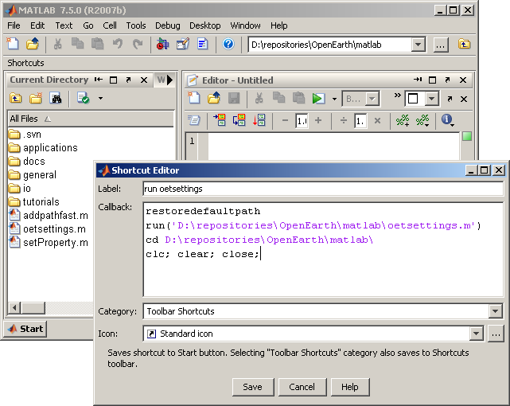

Run oetsettings manually
The most straightforward way of initiating OpenEarthTools in Marlab is to manually run the function that adds all relevant paths to the matlab search path (oetsettings.m). Once you have obtained a cheackout of OpenEarthTools oetsettings.m can be located in the matlab directory of the trunk. Running the function in matlab will do the trick:
run('<enter filepath here>/oetsettings');
Information on making a checkout of the OpenEarthTools can be found on:
Run oetsettings via a shortcut
As you neither want to remember this code or the location of the mfile, but you will run it every time you start MATLAB from know on, you could make a ahortcut on the shortcut bar. Just rightclick ==> new shortcut. Enter the command to run oetsettings. If you save this, you can run oetsetings by pressing that shortcut button. You might even want to add some other commands, so matlab is effectiveley reset every time you press this button. The following code can be used in a shortcut:
restoredefaultpath run('<enter filepath here>\oetsettings.m') cd <enter filepath here> clc; clear; close;

Run oetsettings as part of the matlab startup
There is also a possibility to add scripts or functions to the matlab startup routine. This is easily done by including a file names startup.m in the directory matlab starts. Matlab will automatically run this script or function. The same code used for creating a shortcut can be included in the matlab startup.m.
run('<enter filepath here>\oetsettings.m') cd <enter filepath here>